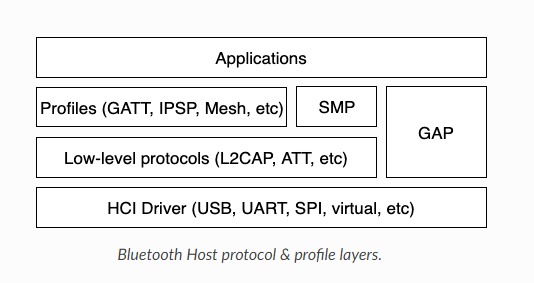

GAP Roles：Peripheral, Central，Observer and Broadcaster
GATT Roles：Server and Client
SMP
persistent storage of Bluetooth-specific settings and data
Bluetooth Mesh Features
Relay, Friend Node, Low-Power Node (LPN) and GATT Proxy
Provisioning bearers over PB-ADV and PB-GATT
Architecture of the BLE protocol stack：
There are 3 main layers in total, which together form a complete Bluetooth low energy protocol stack.
Host：THis layer lies below the application and consists of multiple (non-real-time) network and transport protocols that enable the application to communicate with peer devices in a standard and interoperable manner.
Controller：The controller implements the link layer, a low-level real-time protocol that provides standard interoperability for over-the-air communications with the radio hardware. The Link layer handles packet reception and transmission, guarantees data delivery, and handles all link layer control procedures.
Radio Hardware：Hardware implements the required analog and digital baseband functional blocks that permit the Link Layer firmware to send and receive in the 2.4GHZ band of the spectrum.
Bluetooth Host：

Bluetooth Host layer implements all high-level protocols and profiles, and provides high-level APIs for applications.
HCI: Host Controller Interface
L2CAP: Logical Link Control and Adaptation Layer Protocol
GATT: Generic Attribute Profile
GAP: Generic Access Profile
SMP: Security Manager Protocol
Application
The application layer is where the user develops the actual Bluetooth application, including the necessary protocol stack parameter settings and calls of various functions. We analyze from the Bluetooth slave and Bluetooth master respectively.
Slave
Related hardware and basic service initialization.
Set ble advertising parameters including advertising interval, and advertising data, and scan response
Add customized Gatt services.
Start ble advertising.
Handle events posted by ble stack, such as ble connection established event, and data from master, and so on.
Master
Related hardware and basic service initialization.
Set ble scan parameters and start ble scan.
Initiate a connection with target peer device when target peer device is scanned.
Handle events posted by ble stack, such as ble connection established event, data from slave, and so on.
/**
* function Disconnect from a remote device or cancel pending connection.
* @param[in] conn： Connection to disconnect.
* @param[in] reason：Reason code for the disconnection.
* @return 0:Success, !=0:Fail.
*/
/**
* function Initiate new ble connection to a remote device.
* @param[in] peer：Remote address.
* @param[in] param：Initial connection parameters.
* @return Valid connection object on success or NULL otherwise.
*/
/**
* function This function enables/disables automatic connection initiation. Every time the device loses the connection with peer, this connection will be re-established if connectable advertisement from peer is received.
* @param[in] addr：Remote Bluetooth address.
* @param[in] param：If non-NULL, auto connection is enabled with the given parameters. If NULL, auto connection is disabled.
* @return 0:Success, !=0:Fail
*/
/**
* function Set security level for a connection. This function enable security (encryption) for a connection. If device is already paired with sufficiently strong key encypiton will be enabled. If link is already encrypted with sufficiently strong key this function does nothing.
* @param[in] conn：Connection object.
* @param[in] sec： Requested security level.
* @return 0:Success, !=0:Fail
*/
/**
* function Get security level for a connection.
* @param[in] conn：Connection object.
* @return Connection security level.
*/
u8_tbt_conn_enc_key_size(structbt_conn*conn)
/**
* function Get encryption key size. If there is no security (encryption) enabled 0 will be returned.
* @param[in] conn：Existing connection object.
* @return Encryption key size.
*/
/**
* function Enable/disable bonding. Set/clear the Bonding flag in the Authentication Requirements of SMP Pairing Request/Response data.
* @param[in] enable：1:enable bonding, 0: disable bonding.
* @return None.
*/
/**
* function Reply with entered passkey. This function should be called only after passkey_entery callback from bt_conn_auth_cb structure was called.
* @param[in] conn：Connection object.
* @param[in] passkey：Entered passkey.
* @return 0:Success, !=0:Fail.
*/
/**
* function Reply with entered PIN code. This function should be called only after PIN code callback from bt_conn_auth_cb structure was called.
* @param[in] conn: Connection object.
* @param[in] pin： Entered PIN code.
* @return 0:Success, !=0:Fail.
*/
intbt_le_read_rssi(u16_thandle,int8_t*rssi)
/**
* function Read the received signal strength indication(RSSI) value.
* @param[in] handle：The handle for the connection for which the RSSI is to be read.
* @param[in] rssi：Buffer to store the read rssi value.
* @return 0:Success, !=0:Fail.
*/
/** LE Advertising Parameters. */structbt_le_adv_param{/** Local identity */u8_tid;/** Bit-field of advertising options */u8_toptions;/** Minimum Advertising Interval (N * 0.625) */u16_tinterval_min;/** Maximum Advertising Interval (N * 0.625) */u16_tinterval_max;#if defined(CONFIG_BT_STACK_PTS)u8_taddr_type;#endif};
This data structure is used to configure advertising parameters, including local identification id, advertising option bit field, advertising interval. The advertising option bit field has the following values:
enum{/** Convenience value when no options are specified. */BT_LE_ADV_OPT_NONE=0,/** Advertise as connectable. Type of advertising is determined by * providing SCAN_RSP data and/or enabling local privacy support. */BT_LE_ADV_OPT_CONNECTABLE=BIT(0),/** Don't try to resume connectable advertising after a connection. * This option is only meaningful when used together with * BT_LE_ADV_OPT_CONNECTABLE. If set the advertising will be stopped * when bt_le_adv_stop() is called or when an incoming (slave) * connection happens. If this option is not set the stack will * take care of keeping advertising enabled even as connections * occur. */BT_LE_ADV_OPT_ONE_TIME=BIT(1),/** Advertise using the identity address as the own address. * @warning This will compromise the privacy of the device, so care * must be taken when using this option. */BT_LE_ADV_OPT_USE_IDENTITY=BIT(2),/** Advertise using GAP device name */BT_LE_ADV_OPT_USE_NAME=BIT(3),/** Use low duty directed advertising mode, otherwise high duty mode * will be used. This option is only effective when used with * bt_conn_create_slave_le(). */BT_LE_ADV_OPT_DIR_MODE_LOW_DUTY=BIT(4),/** Enable use of Resolvable Private Address (RPA) as the target address * in directed advertisements when CONFIG_BT_PRIVACY is not enabled. * This is required if the remote device is privacy-enabled and * supports address resolution of the target address in directed * advertisement. * It is the responsibility of the application to check that the remote * device supports address resolution of directed advertisements by * reading its Central Address Resolution characteristic. */BT_LE_ADV_OPT_DIR_ADDR_RPA=BIT(5),/** Use whitelist to filter devices that can request scan response * data. */BT_LE_ADV_OPT_FILTER_SCAN_REQ=BIT(6),/** Use whitelist to filter devices that can connect. */BT_LE_ADV_OPT_FILTER_CONN=BIT(7),};
Refer to following configuration to configure ble advertising parameters：
/** LE scan parameters */structbt_le_scan_param{/** Scan type (BT_LE_SCAN_TYPE_ACTIVE or BT_LE_SCAN_TYPE_PASSIVE) */u8_ttype;/** Bit-field of scanning filter options. */u8_tfilter_dup;/** Scan interval (N * 0.625 ms) */u16_tinterval;/** Scan window (N * 0.625 ms) */u16_twindow;};
This data structure is used to construct scan parameters.
type：BT_LE_SCAN_TYPE_ACTIVE（0x01）、BT_LE_SCAN_TYPE_PASSIVE(0x00).
filter_dup：Bit0, filter duplicates. bit1: filter using whitelist.
interval：Scan interval.
window：Scan window.
Below is an example to configure ble scan parameters:
/** Connection parameters for LE connections */structbt_le_conn_param{u16_tinterval_min;u16_tinterval_max;u16_tlatency;u16_ttimeout;#if defined(CONFIG_BT_STACK_PTS)u8_town_address_type;#endif};
This data structure is used to construct ble connection parameters.
interval_min：Minimum connection interval.
interval_max：Maximum connection interval.
latency：Slave latency for the connection in number of connection events.
timeout：Supervision timeout for the LE link.
Below is an example to configure ble connection parameters：
structbt_conn{u16_thandle;u8_ttype;u8_trole;ATOMIC_DEFINE(flags,BT_CONN_NUM_FLAGS);/* Which local identity address this connection uses */u8_tid;#if defined(CONFIG_BT_SMP) || defined(CONFIG_BT_BREDR)bt_security_tsec_level;bt_security_trequired_sec_level;u8_tencrypt;#endif /* CONFIG_BT_SMP || CONFIG_BT_BREDR *//* Connection error or reason for disconnect */u8_terr;bt_conn_state_tstate;u16_trx_len;structnet_buf*rx;/* Sent but not acknowledged TX packets with a callback */sys_slist_ttx_pending;/* Sent but not acknowledged TX packets without a callback before * the next packet (if any) in tx_pending. */u32_tpending_no_cb;/* Completed TX for which we need to call the callback */sys_slist_ttx_complete;structk_worktx_complete_work;/* Queue for outgoing ACL data */structk_fifotx_queue;/* Active L2CAP channels */sys_slist_tchannels;atomic_tref;/* Delayed work for connection update and other deferred tasks */structk_delayed_workupdate_work;union{structbt_conn_lele;#if defined(CONFIG_BT_BREDR)structbt_conn_brbr;structbt_conn_scosco;#endif};#if defined(CONFIG_BT_REMOTE_VERSION)structbt_conn_rv{u8_tversion;u16_tmanufacturer;u16_tsubversion;}rv;#endif};
This data structure contains the connection object of a specific link, including ble connection parameters. Application layer can obtain this connection object once connection is established successfully.